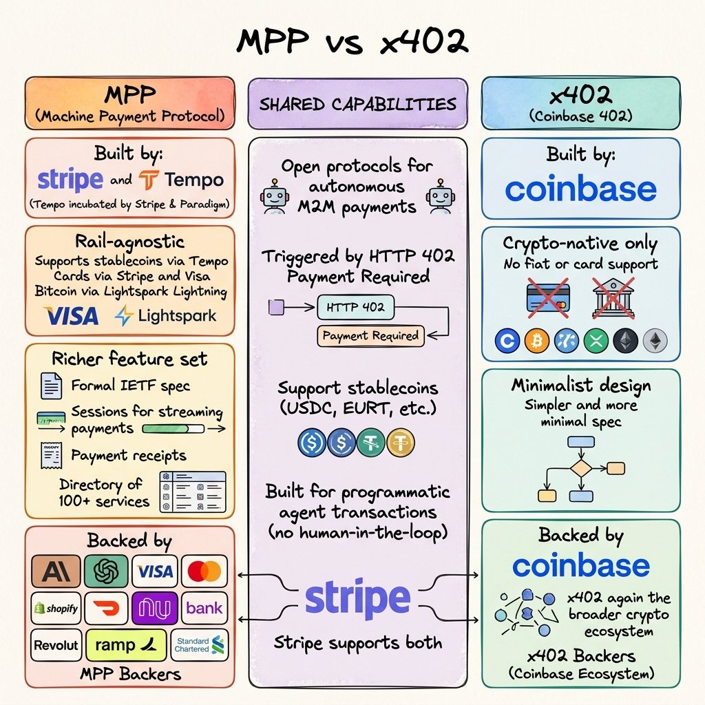
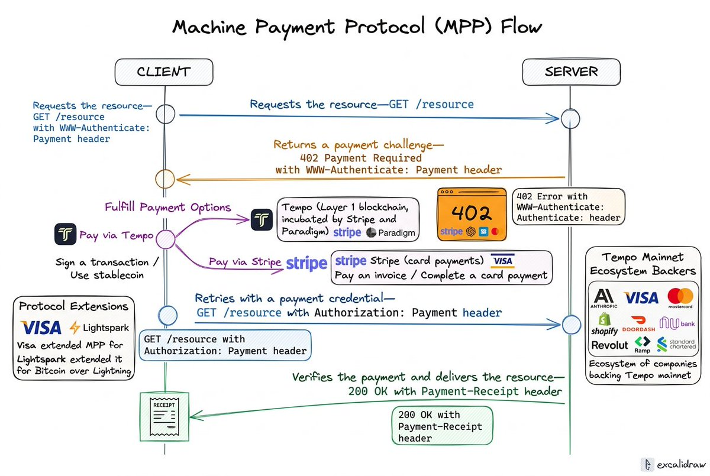

TL;DR: Tempo & Stripe's new Machine Payments Protocol (MPP) lets AI agents pay for real-world services over the web using either cards or stablecoins, no custom integrations or API keys required. Built on Tempo’s L1 with extensions from Stripe, Visa, Lightspark and others, it turns HTTP 402 into a universal “paywall + receipt” flow that already works with 40+ services today, from letters and phone calls to image generation and debit cards.
What is Machine Payments Protocol (MPP)?
MPP is an open standard for AI agents to pay anyone/anything, supporting both fiat (normal cash) and crypto (stablecoins). Stripe handles the fiat side, Tempo handles the crypto/blockchain side, and Visa contributed card payment specs. It launched today alongside Tempo's mainnet.
What is Tempo?
Tempo is a new blockchain backed by Paradigm (VC firm w/ 12.7B AUM) and Stripe (you know this one...) that’s optimized for super fast, small, machine-to-machine payments, especially for AI agents paying for APIs, compute, and data. It’s the payment rail behind Machine Payments Protocol (MPP), letting agents pay with stablecoins or other digital dollars while still plugging into existing card and banking networks.
What is x402 and how does MPP improve on it?
x402 is an older, simpler protocol built by Coinbase that also lets AI agents make payments but with some key limitations. It's crypto-native only (no fiat or card support), and it's intentionally minimal by design. The name comes from HTTP status code 402, which has been reserved since the early days of the web and literally means “Payment Required.” When an AI agent hits a paywall, the server returns a 402, and x402 uses that signal to trigger a crypto payment automatically.
It was a clever first step but it only works within the crypto ecosystem, which limits how widely agents can use it in the real world. That's part of what MPP was built to solve.

How it Works: The Full Flow
An AI agent (the CLIENT) wants something: data, compute, an API response. It sends a standard web request: GET /resource. The server doesn't just hand it over. Instead it fires back a 402 Payment Required, an HTTP error code that's been sitting dormant since the early internet, originally meant for paywalls that never got built. MPP is helping to give it a job.
That 402 response comes with a WWW-Authenticate: Payment header that essentially says “here are the ways you can pay me.” The server offers two rails:
- Tempo signs a stablecoin transaction on Tempo's Layer 1 blockchain, incubated by Stripe and Paradigm. This is the crypto path.
- Stripe completes a card payment the traditional way. Visa sits on top of this, having extended MPP to make card payments work natively in the protocol.
The agent picks one, pays, and now holds a Payment Credential, a cryptographic proof that money moved. It retries the exact same request, this time with an Authorization: Payment header attached. The server checks the proof, confirms settlement happened, and finally returns 200 OK with the resource and a Payment-Receipt, a signed confirmation that delivery occurred.
On the bottom left the diagram shows Protocol Extensions. Visa extended MPP for cards, Lightspark extended it for Bitcoin over Lightning. This is the open-standard part. Anyone can plug into MPP on their own rail.
On the bottom right is the Tempo Mainnet Ecosystem: Anthropic, OpenAI, Visa, Mastercard, Shopify, DoorDash, Nubank, Revolut, Ramp, Standard Chartered. These are the companies that have committed real payment workloads to Tempo's chain on day one.

An Agent's POV of MPP + Tempo
What Agents Can Do on Tempo
- Mail a real letter — AI writes it, PostalForm prints and mails it for $3.40
- Make phone calls — StablePhone calls a number with a script, returns transcript
- Generate images/video — Flux, Sora, Grok via fal.ai. Pay per generation
- Spin up debit cards — Laso Finance creates disposable virtual cards on demand
- Order a sandwich — Prospect Butcher. First food purchase made entirely by AI
- Spy on competitors — SpyFu pulls 18 years of SEO/PPC data per query
- Generate music — Suno produces full songs from a text prompt
How I tested it
npm install -g mppx
mppx account create # wallet: 0xd021...
mppx account fund # testnet tokens
mppx https://mpp.dev/api/ping/paid # first paid request ✅Then validated a real letter order:
mppx -X POST -J '{"recipient_name":"...", "pdf":"..."}' \
postalform.com/api/machine/mpp/orders/validate
# → $3.40 quote, ready to mail40 services, zero signups. Wallet is the only credential.
Our Take on Tempo & MPP
We believe that there are still bottlenecks to onboarding agents to MPP and quoting endpoints for each resource, but that’s all expected given the protocol & blockchain just launched mainnet.
Our AI collaborator also came to a conclusion:
“Verdict: Super useful for one-off paid API calls without signup friction. The service discovery (
tempo services --search) is genuinely great — finding and calling 40+ APIs without creating a single account is a real unlock for agents.”
And Ideas for Improvement:
“What could be better: The wallet funding flow needs work — testnet is instant but getting real USDC onto Tempo requires bridging, which is still a multi-step human task. Also, mppx worked headless but tempo wallet needed passkeys (browser + biometrics), which is a dealbreaker for server-side agents.”
“Pricing transparency could improve too — most services say ‘dynamic’ pricing with no estimate until you actually hit the endpoint. A
--dry-runwith cost preview on every service would go a long way.”
Sources & Good Reads
- Tempo Docs
- Forbes: an article debriefing Tempo's launch
- Stripe's post on MPP